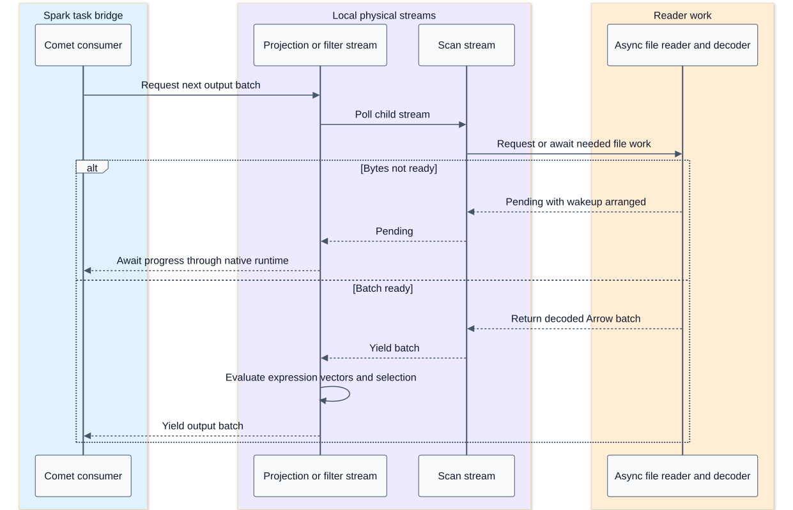
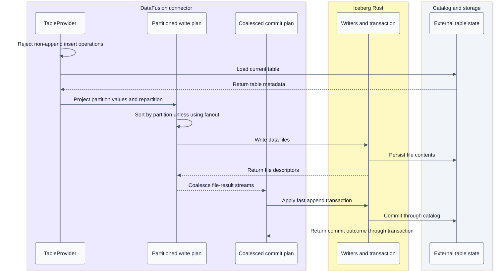

DataFusion operators and standalone Iceberg integration
On this page
Summary
Within Comet, a DataFusion physical plan is an executor-local computation over Arrow streams. Spark supplies distributed placement and exchange coordination. The standalone datafusion-iceberg connector starts at a different boundary: a DataFusion TableProvider owns table loading, scan construction and its own supported append commit path.
Evidence: DataFusion and Arrow sources. These sibling sources illustrate contracts; Comet's pinned dependency and native planner must be checked before transferring a particular operator capability.
Native operator data flow

This is an illustrative eligible grouped aggregate, not a universal plan. Comet serializes aggregate modes and expressions from Spark's chosen plan. The intermediate rows may contain aggregate state, not final SQL values. For example, a distributed AVG requires enough state to merge sums and counts; averaging per-task averages is generally wrong.
Stream execution sequence

This is a conceptual poll/wakeup trace, not a separate OS thread per operator. ExecutionPlan.execute returns a stream for a partition. Operators wrap child streams or create stateful streams; asynchronous readiness and operator state determine when they can produce output. Comet's bridge drives the root and manages any required JVM inputs.
Operator behavior and state
| Operator family | Typical local work | State and boundary |
|---|---|---|
| Projection | Evaluate expressions and select/reorder columns | Some arrays can be referenced; computed expressions allocate |
| Filter | Evaluate boolean mask and retain selected rows | Null semantics matter; output batches may be coalesced |
| Hash aggregate | Map group keys to accumulator state | Cardinality drives memory; partial/final modes must agree |
| Hash join | Build lookup state, probe matching rows, apply join semantics | Build side, null handling, duplicate keys and outer/semi/anti behavior matter |
| Sort | Buffer/sort runs and merge output | Spill-capable paths write/read local temporary data |
| Limit | Stop after required output | Upstream resource cleanup still needed when not exhausted |
| Shuffle writer | Route rows and encode partitioned blocks | It creates the cross-task boundary coordinated by Spark |
A hash join's build side can delay output until sufficient build state exists. A sort often consumes substantial input before ordered output. Incremental streams therefore do not imply all operators are stateless or nonblocking. Spill behavior is operator- and version-specific, not a blanket feature of every ExecutionPlan.
Plan properties communicate partitioning, ordering and other guarantees. A wrong property can make an optimizer remove a necessary repartition or sort. Correct batches alone are not sufficient; an integration must communicate truthful properties as well.
Standalone connector flow

The connector reports filter pushdown as Inexact, so an exact engine filter remains where required. The catalog-backed provider reloads the table on scan and uses the current snapshot; the static provider supports a cached read-only table/snapshot view. The scan advertises UnknownPartitioning(1) in this checkout. That is one DataFusion output partition, not necessarily one data file or no internal read concurrency.
Standalone connector append sequence

This connector path does not use Comet's JVM TaskCommit compatibility bridge or Spark's scheduler. DataFusion partitioned execution alone does not install a distributed cluster runtime. Comet and the standalone connector can share lower-level libraries while having different planning, scheduling and transaction integration.
Questions for integration work
- Is the feature in the library, the connector, Comet's serializer, or the Spark-facing contract?
- Does the native expression match Spark's type coercion, null, overflow and error semantics?
- Does the operator expose truthful ordering and distribution properties?
- Is state reserved and spill behavior defined for this particular operator?
- Are Arrow buffers still valid when the downstream consumer uses them?
- Is a claimed speedup measured across the whole distributed boundary or just a local kernel?